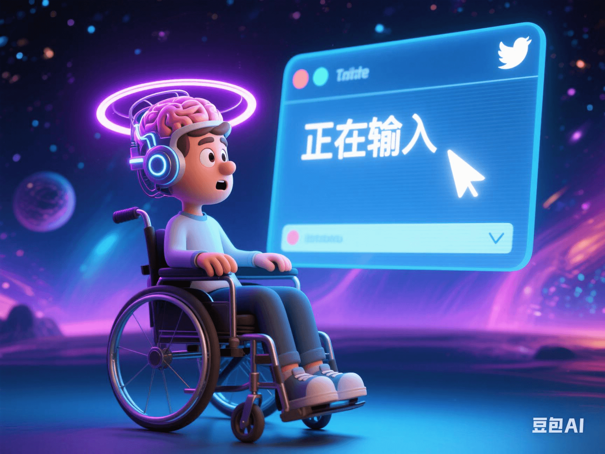

Musk's New Progress in Brain-Computer Interface: Paralyzed Patients Tweet with Thoughts!
PeaceLove.Top Insights :2025-04-19
🧠 Musk's New Progress in Brain-Computer Interface: Paralyzed Patients Tweet with Thoughts! 📱
🌟 The boundaries of technology are being redefined! Thanks to the efforts of Musk's Neuralink team, the brain-computer interface (BCI) technology has made remarkable progress-paralyzed patients can successfully send tweets with just their thoughts! This technological breakthrough not only has a revolutionary impact on the field of neuroscience but also gives paralyzed patients a glimmer of hope and may even change future medical and communication methods 💡.
🧠 Brain-Computer Interface: Breaking Physical Barriers, Connecting the Mind with Machines
The brain-computer interface technology directly connects the brain with external devices, allowing brain signals to directly control computers, robots, or other electronic devices. The core advantage of this technology is that it can bypass traditional limb control, providing patients who have lost their motor abilities due to illness, accidents, or other reasons with the possibility of communicating with the outside world again. Musk and Neuralink's goals are: Restoring physical functions: Helping paralyzed patients control external devices with their thoughts and even restore some motor functions. Accelerating the integration of the brain and machines: In the future, brain-computer interfaces may not only be used for disease treatment but also bring more intelligent enhancements to humans, even enabling abilities beyond human limits.
📱 How Do Paralyzed Patients Tweet with Their Thoughts?
Technical principle:
- Brainwave interpretation: Tiny electrodes are implanted in the patient's brain to capture and interpret brainwave signals. Each signal represents a specific intention of the brain.
- Signal conversion into instructions: These electrodes convert brain signals into instructions that a computer can understand. By connecting with external devices (such as a computer or a mobile phone), the function of thought-controlled operation is achieved.
- Tweet sending: After training and debugging, patients can select tweet content and send it to social platforms like Twitter with just their thoughts by concentrating or through slight brain-electrical activities, thus completing the information transmission.
Significance of the breakthrough:
- Empowering paralyzed patients: This technology enables patients who cannot use their limbs to communicate with others again through text or voice, providing strong emotional support and psychological comfort 💬.
- Changing communication methods: If this technology can be popularized, it will completely change the way people communicate with each other, providing a more direct and rapid means of communication 🔗.
🧬 Major Advancements in Neuroscience: A Bridge Connecting the Brain and the Outside World
Neuroscience breakthrough:
Musk's brain-computer interface not only makes technological breakthroughs but also occupies an important position in neuroscience research. By interpreting brain signals, scientists can gain in-depth knowledge of how the brain controls limb movement, sensation, and cognition. Each advancement may open up new paths for the treatment of nerve injuries.
The possibility of nerve remodeling:
With the development of technology, future brain-computer interfaces may not only read brain signals but also 'write' signals, helping to restore nerve functions or improve the way the brain works, bringing good news to patients with diseases such as strokes and Parkinson's disease.
🚀 Future Outlook: Wide Applications of Brain-Computer Interfaces
As companies like Neuralink continue to invest in the research and development of brain-computer interface technology, the following applications may emerge in the future:
- Extensive medical treatment: In addition to helping paralyzed patients, brain-computer interface technology can also assist in the treatment of other neurological diseases, such as aphasia and Alzheimer's disease, enabling patients to regain basic living functions.
- Enhancing human cognitive and sensory abilities: Brain-computer interfaces will not only be used for treatment. In the future, people may even enhance their memory, attention, and even sensory abilities through external devices, opening up new dimensions of human cognition 🧠.
- Virtual reality and human-machine collaboration: By controlling actions in virtual reality (VR) or augmented reality (AR) environments through brain-computer interfaces, humans will be able to interact with the virtual world more naturally and even control robots or drones to perform complex tasks.
🏆 Technical Challenges and Ethical Issues:
Although this technology is exciting, it also faces many challenges and controversies:
- Technical stability: Brain-computer interfaces need to operate stably in a complex and sensitive brain environment. Ensuring their long-term safety, effectiveness, and no side-effects is one of the biggest current technical challenges.
- Privacy and data security: As brain signals are read and uploaded, ensuring that these private data are not misused has become an ethical issue that needs attention.
- The boundary of human-machine relationships: With the development of technology, the scenario of 'direct human-brain control of computers' may emerge in the future, which will trigger profound thinking about the boundaries between technology and humanity.
🌍 Conclusion: Brain-Computer Interfaces Changing the Future
The breakthroughs made by Musk and the Neuralink team in brain-computer interface technology indicate that we are getting closer to a future of 'barrier-free communication'. Although this technology is still in its early stages, its huge potential undoubtedly provides endless possibilities for future medical treatment, communication, and the expansion of human cognition 🌟. We are standing on the threshold of a new era, waiting for brain-computer interface technology to truly enter our daily lives and enable everyone in need to regain the power of freedom and communication 🧠✨.